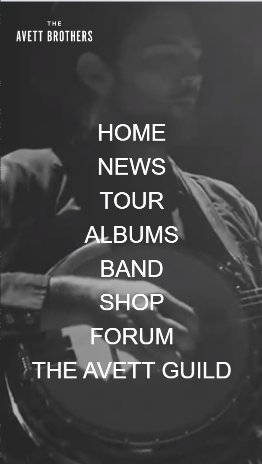
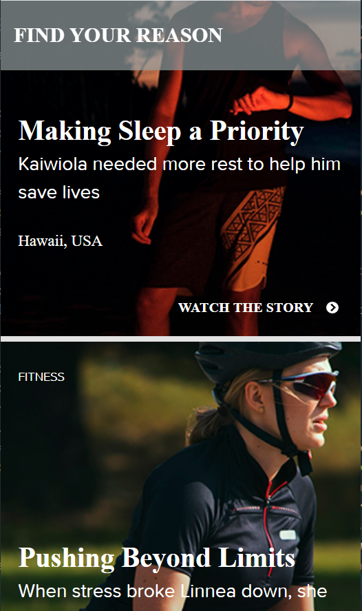

White Space and Clean Design
Naturally Ella
naturallyella.com
This website exemplifies the use of White Space and Clean Design. The stark design of the title draws the eye upwards, the simple menu bar at the top serves it's purpose without question, and the perfectly centered photography draws viewers in. This Vegetarian blog serves up beauty in a healthy way: clean and fresh eating/ viewing.
Visual Hierarchy
The Avett Brothers
theavettbrothers.com These website designers know you are here because you are a fan. The focus of the words in this instance, serve to point viewers directly where they want to go. Which is what the Avett Brothers do: soulfully craft bluegrass-honky tonk-country rock-folkpop straight into your soul.
PARC: Repetition
Fitbit Stories
stories.fitbit.com As you scroll down the page you can't help but feel motivated. There are perfectly curated "success stories" in a repetitive layout. Headlines within each story frame are setup with repetitive fonts, descriptions, and photos. Fitbit uses the tool of repetition to inspires viewers to create similar habits: getting outdoors, and wearing snazzy watches.